AlaskaStories.com
Pipes made by other chaps in Alaska, including the future of smoking.
This is the start of a page for interesting smoking pipes made by other sorts in Alaska.
Below - A traditional St. Lawrence Island, Siberian Style Pipe. These pipes are not being made anymore, to the web slave's knowledge. They are collector art items, not for smoking, on account as they are lead inlay (melted bullets) in walnut (broken gun stock wood), with a lead stem to chew on, and a lead bowl from which to smoke nicotine and lead fumes. They were smoked in the old days, before people figured out why the pipe smokers did not live to an old age. Not many were made, and they rarely come available for sale. More comments on these pipes, on the Smoking page. One of the most recent, if not last, makers of these pipes is reported to be "Old Kolowiyi", "father of John", manager of the Savoonga Native Store for many years, known for this style of Siberian pipes back in the 1960's and 70's.
Imagine trying to talk that guy out of his pipe.
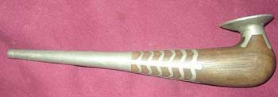
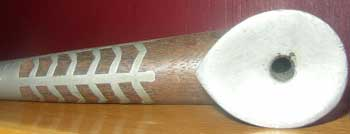
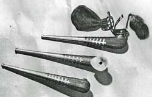
Old pipe with tobacco pouch and caribou hair supply.
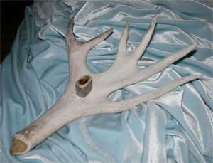
The shovel of a caribou antler, with a caribou antler bowl, made by Matt.
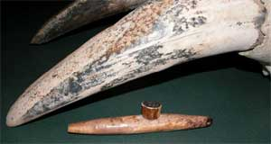
A fossil walrus ivory fishing sinker, with a fossil walrus ivory bowl, made by Anivuq.
This is Anivuq's general style. There will hopefully be more photos of his art.
The background is old worn-down walrus tusks of a very old male walrus.
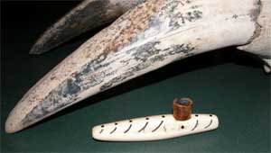
A seal design by Anivuq. New walrus ivory, with baleen spots and ink ribs, and a fossil walrus ivory bowl.
More pipes as the pipe guy finds those worthy of inclusion.
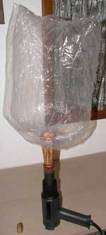
The story of humans smoking stuff is fascinating, and a bit too long for a web page. Humans are a primitive, new species, early in their learning process. Obvious to many, smoking is an illogical process to acquire the benefits of the material being inhaled. The damaging carbon particles inhaled into the lungs, and the extraneous chemicals, are a high price to pay for the precise benefits being sought. Of course the desired substance itself is often denigrated by those who are not interested in it and who do not understand their own illogical afflictions of choice, such as voting for US DemocanRepublicrats who obviously do far more damage to society and individuals than any possible benefit they could offer. They steal the people's money under the excuse of (forced) taxation, and spend all the money on themselves and their blatantly idiot ideas, without the taxpayers even getting a good high.
But humans learn, however slowly.
Humans will refine the beneficial substance ingestion processes to limit or eliminate the ingestion of associated harmful substances, such as carbon particles, that are not desired.
Therefore comes forward the SubKindler, also called a vaporizer, for heating smokables to a temperature below their kindling or carbonizing temperature, to the precise temperature that volatilizes only the desired substance. Therefore one derives the desired chemical, without the carbon particles accumulating in the lungs, and without other unwanted volatiles.
Of the many designs of commercial and individually made vaporizers or SubKindlers entering the smoking subculture, the following is only one, which caught the attention of the web slave. Other designs may have varied advantages and disadvantages. Many modifications are available to suit he or she who makes their own device.
The heating device is a Sears Industrial (Model A4060) Heat Gun. It was chosen because it has a good thermal couple to precisely regulate a constant temperature, somewhat, within its sometimes unexplainable nature. Research on this particular device produced the precise temperature setting (slightly above 3 on the setting gauge) to volatilize the most desired compounds within a popularly smoked substance.
The spalted birch wood cone in the photos is the handling portion that separates the hot heat gun barrel from the high temperature resistant plastic turkey baster bag used to collect the vaporized substance. The nearly clear warm air in the bag is then inhaled. The bag is a standard baster bag used for cooking turkey's in ovens, found at most grocery stores.
Another design uses a wire cage to hold the the substance cup at the heat gun barrel end.
The photos show a progression of the parts and assembly.
More information will be uploaded later.
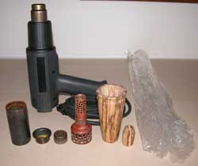
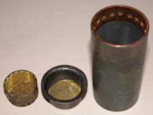
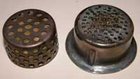
The difficult to find part for this design is the thin wall stainless steel pipe, found in a shop scrap bin, that precisely fits over the heat gun barrel. Find whatever you think will work. The copper strip inside the stainless pipe makes the top rim a bit thicker to hold the substance cup. The substance cup is made from a cutting torch striker cap (flint striker or sparker), available at most hardware stores. Holes were drilled in the bottom. The cup cover is a small sink drain strainer, with the rim cut off, also found at most hardware stores. Mesh screen is put in both.
The 3/4 inch copper pipe and reducer fitting are off-the-shelf plumbing fittings. Holes were drilled in them to reduce the heat retaining mass. A leather or thicker cotton glove is also needed to gingerly handle the steel or copper parts next to the heat gun barrel, if one is not sufficiently patient to wait for the heat gun to cool. Any less-dense wood will work for the handling cone, such as easily carved bass wood. The temperature is hot enough to burn your hands if you directly touch the metal, but not hot enough to burn wood or leaf.
Another design that holds the substance cup by a thick wire bracket not touching the heat gun barrel is easier to handle during operation.
The photos show the assembly, one part per photo.
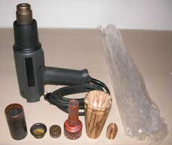
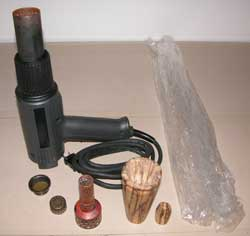
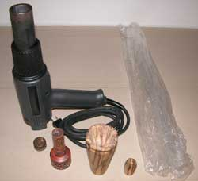
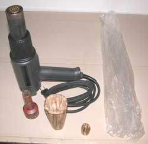
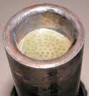
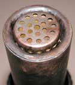
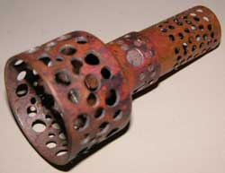
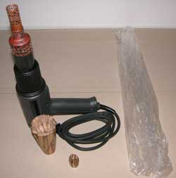
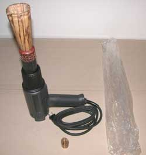
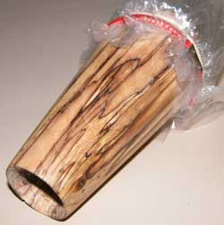
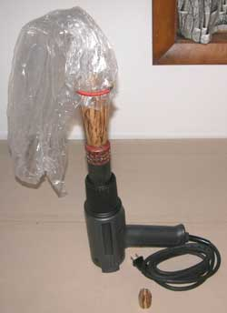
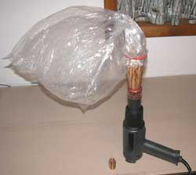
First pre warm the heat gun, then add the substance cup.
This design of heat gun seems to have some erratic temperature fluctuations in relation to other electrical devices in the vicinity, and even to being held or not held. Simply test it a few times, variously holding it and not holding it, while watching the temperature light indicators, to recognize what action will produce a consistent temperature.
Perhaps tape a stop on the On/Off switch to prevent inadvertently turning it on to the High position, while being able to immediately turn it to the Medium position to avoid any hesitation on the Low position that would just fill the bag with cool air.
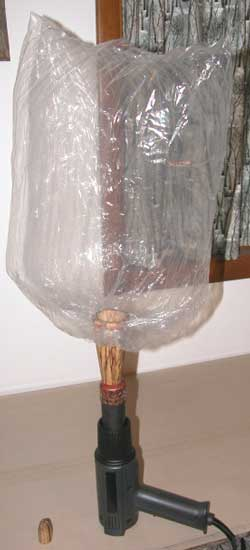
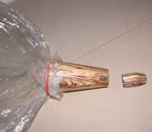
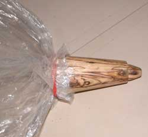
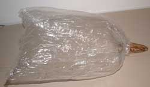
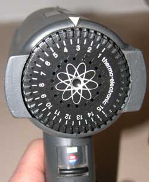
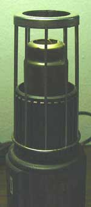
The setting: Slightly above 3.
A different design to hold a different shaped substance cup against the barrel end. This design eliminates most of the heat transfer to the handling portion, and may not require a glove to handle this cup holder. The vertical wires fit into the depressed slots of the plastic barrel protection sleeve.
And there we jolly well have it again for the illogical hobby of inhaling smoke, or the beneficial compounds obscured within it, or the hot air of it all, for the story value, if you can remember the story.
Stories 1
Stories 2
Stories 3
Stories 4
Stories 5
Stories 6
Stories 7
Stories 8
Stories 9
Stories 10
Stories 11
Stories 12
Stories 13
Stories 14
Places
Concepts
Smoking
Smoke Photos
Stuff
Links
Home